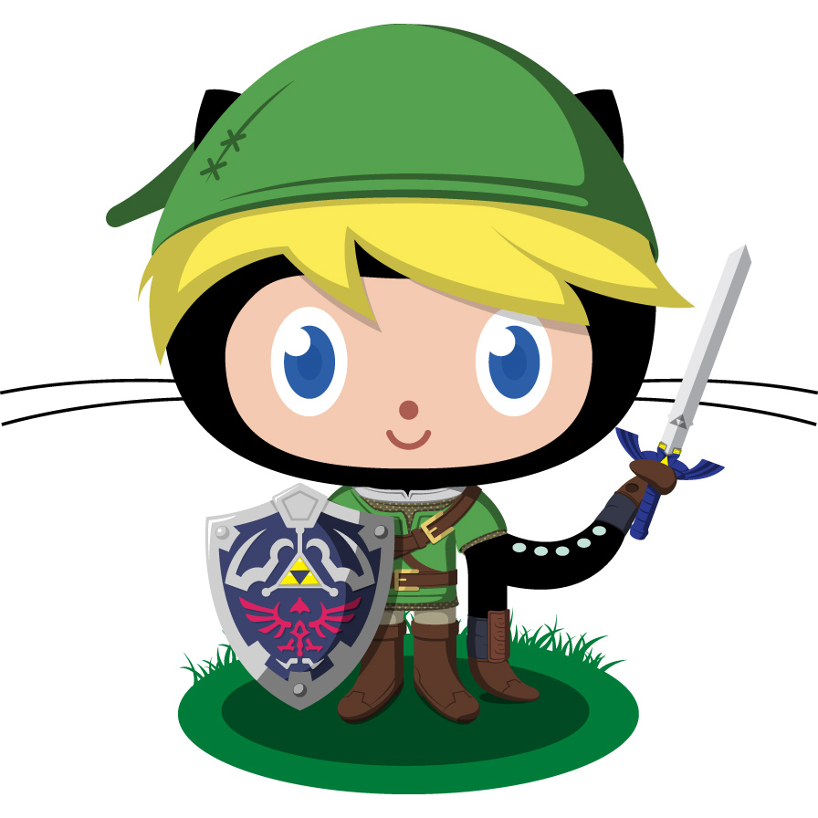

On Mar 28, when I came back school I heard a terrible news, github had been attracked by large scale DDos[^1].
Then I saw the notice of github blog[^2] :
We are currently experiencing the largest DDoS (distributed denial of service) attack in github.com's history. The attack began around 2AM UTC on Thursday, March 26, and involves a wide combination of attack vectors.
Next, I am concerned about this matter, I continued to search news about the attack.
Obviously, the attack came from China[^4], github blog is not very clearly to mention the cause[^2]. But well-know reason is that greatfire.org project and cn-nytimes project, all the men know their opponent but button their lip.(at least, Chinese medias do so), maybe there is as V for Vendetta[^3] says :
There are, of course, those who do not want us to speak, even now, orders are being shouted into telephones and men with guns will soon be on their way. Why? Because while the truncheon may be used in lieu of conversation, words will always retain their power, words offer the means to meaning and, for those who will listen, the enunciation of truth. And the truth is something terribly wrong with this country, isn't there? Cruelty and injustice,intolerance and oppression. And where once you had the freedom to object, to think and speak as you saw fit, you now have censors and surveillence coercing your conformity and soliciting submission. How did this happen? Who is to blame? Certainly there are those who are more responsible than others. And they will be held accountable. But again, truth be told, if you are looking for the guilty, you need only look into a mirror.
But there isn't a real V in China.
In several days after the attack, I was being more and more anxious, I worried when I awake in the next morning I lost all the codes and essays what are on github before, only recieve the message the page shows Connection Timeout or Connection Reset By Peer, it will be so dispirited a news. My scruple is with reasonable, such as google, duckduckgo, aren't there?
I am only wanna push my codes onto github to communicate with programmers and open-soucers who come from all over the world, and use githubpages to manage my blog to write down what I meet and what I think, but it possibly will be a luxurious require in nowadays China, it is such a ridiculous fact. Maybe you will feel amazing if you are in other country there follows some customs and systems which like Middle Age to confine people's thoughts in the 21st century, actually it happens currently in China and N-Korea.
All above I just expect to say that do not coat github with any other color, github is complete and pure coder's community.
reference :
[^1] : attacked github
[^2] : the notice of this attack of giihub blog
[^3] : V for Vendetta from wikipedia
[^4] : news from BBC
written in Apr, 8 2015 20 : 43